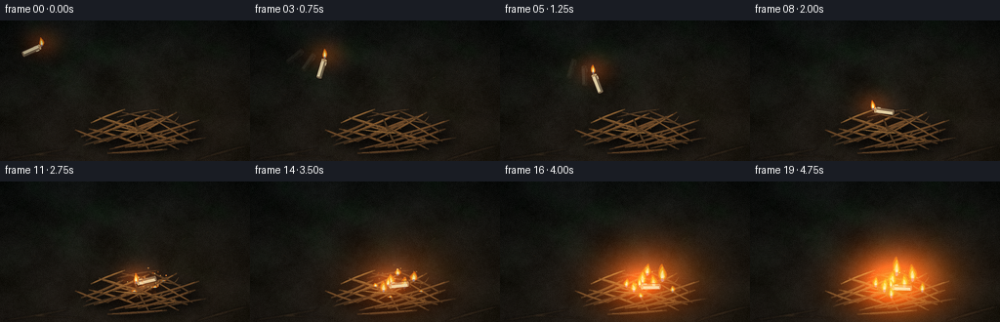
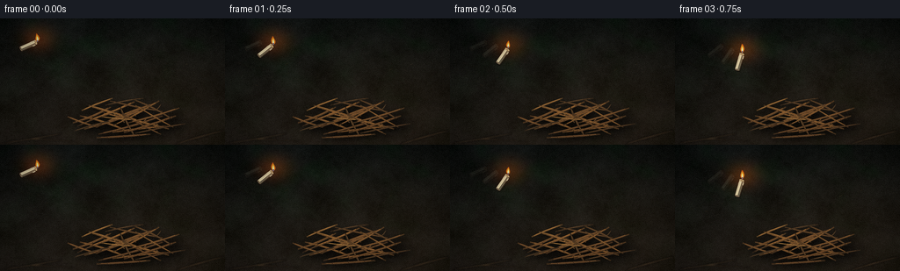
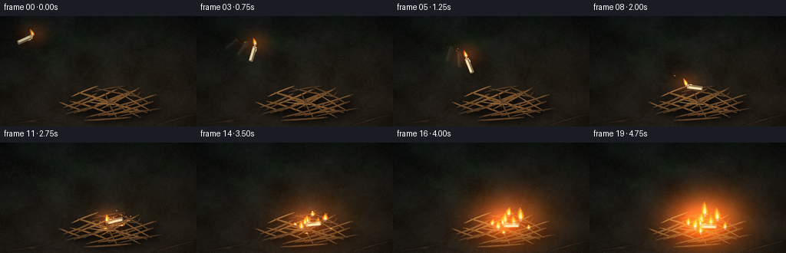
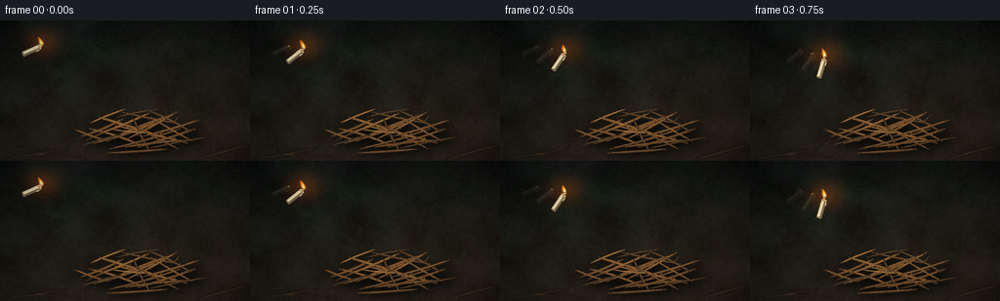

CODING AGENTS AS PIXEL WORLD MODELS
traex/DeepSeek-V4.1-Flash · material_0027
点击播放 · 原生 RGB 像素
此结果可播放，但该运行尚未通过最终提交审核。页面展示不代表评测通过。
逐轮保存的候选
回放视频、检查图与代码变化。
每份候选均可单独播放。实际图片检查记录在下方工具轨迹中。
候选 01播放与检查图
点击播放 · 原生 RGB 像素


展开代码变化
--- 上一保存版本
+++ 本次保存版本
@@ -0,0 +1,633 @@
+from pathlib import Path
+import math
+
+import numpy as np
+from PIL import Image, ImageDraw, ImageFilter
+
+import artifact_io
+
+
+CASE_DIR = Path(__file__).resolve().parent
+W, H = 256, 144
+N, FPS = 20, 4.0
+S = 4
+WS, HS = W * S, H * S
+SEED = 2711
+
+
+def clamp(value, lo=0.0, hi=1.0):
+ return max(lo, min(hi, value))
+
+
+def smoothstep(value):
+ value = clamp(value)
+ return value * value * (3.0 - 2.0 * value)
+
+
+def mix_color(a, b, t):
+ t = clamp(t)
+ return tuple(int(round(a[i] * (1.0 - t) + b[i] * t)) for i in range(3))
+
+
+def noise_field(rng, height, width, cell):
+ gh = max(3, int(math.ceil(height / cell)) + 3)
+ gw = max(3, int(math.ceil(width / cell)) + 3)
+ raw = rng.random((gh, gw), dtype=np.float32)
+ image = Image.fromarray(raw, mode="F").resize((width, height), Image.Resampling.BICUBIC)
+ field = np.asarray(image, dtype=np.float32)
+ lo, hi = np.percentile(field, [1.0, 99.0])
+ return np.clip((field - lo) / max(hi - lo, 1e-5), 0.0, 1.0)
+
+
+def fbm(rng, height, width, cells, weights):
+ result = np.zeros((height, width), dtype=np.float32)
+ total = 0.0
+ for cell, weight in zip(cells, weights):
+ result += noise_field(rng, height, width, cell) * weight
+ total += weight
+ return result / total
+
+
+def make_background(rng):
+ y = np.linspace(0.0, 1.0, HS, dtype=np.float32)[:, None]
+ top = np.array([15, 18, 16], dtype=np.float32)
+ bottom = np.array([34, 27, 20], dtype=np.float32)
+ rgb = top[None, None, :] * (1.0 - y[:, :, None]) + bottom[None, None, :] * y[:, :, None]
+ rgb = np.repeat(rgb, WS, axis=1)
+
+ broad = fbm(rng, HS, WS, [210, 105, 52], [0.50, 0.31, 0.19])
+ fine = fbm(rng, HS, WS, [18, 7, 3], [0.45, 0.34, 0.21])
+ texture = (broad - 0.5) * 17.0 + (fine - 0.5) * 8.0
+ rgb += texture[:, :, None]
+
+ moss = fbm(rng, HS, WS, [170, 70, 28], [0.55, 0.30, 0.15])
+ moss = np.clip((moss - 0.47) * 2.0, 0.0, 1.0)
+ moss *= np.clip((0.72 - y) * 1.4, 0.25, 0.75)
+ rgb[..., 0] -= moss * 7.0
+ rgb[..., 1] += moss * 8.0
+ rgb[..., 2] -= moss * 3.0
+
+ glow = np.exp(-(((np.arange(WS)[None, :] - 205 * S) / (115 * S)) ** 2 +
+ ((np.arange(HS)[:, None] - 91 * S) / (88 * S)) ** 2))
+ rgb += glow[:, :, None] * np.array([7.0, 4.0, 1.5], dtype=np.float32)
+ rgb = np.clip(rgb, 0.0, 255.0).astype(np.uint8)
+ return Image.fromarray(rgb, "RGB").convert("RGBA")
+
+
+def bezier_points(p0, p1, bend, count=10):
+ p0 = np.asarray(p0, dtype=np.float32)
+ p1 = np.asarray(p1, dtype=np.float32)
+ delta = p1 - p0
+ length = max(float(np.linalg.norm(delta)), 1e-4)
+ normal = np.array([-delta[1], delta[0]], dtype=np.float32) / length
+ control = (p0 + p1) * 0.5 + normal * bend
+ points = []
+ for index in range(count):
+ t = index / (count - 1)
+ point = (1.0 - t) ** 2 * p0 + 2.0 * (1.0 - t) * t * control + t * t * p1
+ points.append(point)
+ return points
+
+
+def twig_polygon(points, width, irregular=0.0, phase=0.0):
+ left, right = [], []
+ count = len(points)
+ for index, point in enumerate(points):
+ previous = points[max(0, index - 1)]
+ following = points[min(count - 1, index + 1)]
+ tangent = following - previous
+ length = max(float(np.linalg.norm(tangent)), 1e-4)
+ normal = np.array([-tangent[1], tangent[0]], dtype=np.float32) / length
+ taper = 0.68 + 0.32 * math.sin(math.pi * index / (count - 1))
+ wobble = 1.0 + irregular * math.sin(index * 1.73 + phase)
+ half = width * 0.5 * taper * wobble
+ left.append(point + normal * half)
+ right.append(point - normal * half)
+ return [tuple(p) for p in left] + [tuple(p) for p in reversed(right)]
+
+
+def draw_twig(layer, points_final, width_final, color, phase, shadow_layer=None):
+ points = [np.array([x * S, y * S], dtype=np.float32) for x, y in points_final]
+ polygon = twig_polygon(points, width_final * S, irregular=0.08, phase=phase)
+ if shadow_layer is not None:
+ shadow = [(x + 2.4 * S, y + 3.0 * S) for x, y in polygon]
+ ImageDraw.Draw(shadow_layer).polygon(shadow, fill=(4, 3, 2, 115))
+ draw = ImageDraw.Draw(layer)
+ outline = [(x, y) for x, y in polygon]
+ draw.polygon(outline, fill=(*mix_color(color, (15, 11, 9), 0.56), 255))
+
+ inner = []
+ for x, y in polygon:
+ cx = sum(p[0] for p in polygon) / len(polygon)
+ cy = sum(p[1] for p in polygon) / len(polygon)
+ inner.append((cx + (x - cx) * 0.84, cy + (y - cy) * 0.84))
+ draw.polygon(inner, fill=(*color, 255))
+
+ highlight = mix_color(color, (235, 181, 107), 0.38)
+ dark = mix_color(color, (36, 24, 16), 0.42)
+ draw.line([tuple(p) for p in points], fill=(*highlight, 160), width=max(1, int(0.55 * S)))
+ draw.line([tuple(p + np.array([0.0, width_final * S * 0.20])) for p in points],
+ fill=(*dark, 150), width=max(1, int(0.42 * S)))
+
+ if width_final > 2.0:
+ for index in range(2, len(points) - 2, 3):
+ point = points[index]
+ tangent = points[index + 1] - points[index - 1]
+ length = max(float(np.linalg.norm(tangent)), 1e-4)
+ normal = np.array([-tangent[1], tangent[0]], dtype=np.float32) / length
+ center = point + normal * (width_final * S * 0.09)
+ size = 0.38 * S
+ draw.ellipse((center[0] - size, center[1] - size * 0.55,
+ center[0] + size, center[1] + size * 0.55),
+ fill=(*mix_color(dark, (12, 9, 7), 0.38), 115))
+
+
+def add_flecks(layer, rng):
+ draw = ImageDraw.Draw(layer)
+ palette = [(69, 56, 38), (81, 59, 37), (48, 48, 32), (101, 72, 43),
+ (53, 38, 27), (78, 69, 43)]
+ for _ in range(145):
+ x = rng.uniform(4, W - 4) * S
+ y = rng.uniform(44, H - 3) * S
+ length = rng.uniform(0.7, 2.4) * S
+ angle = rng.uniform(-0.7, 0.7)
+ width = rng.uniform(0.35, 0.9) * S
+ dx, dy = math.cos(angle) * length, math.sin(angle) * length
+ color = palette[int(rng.integers(0, len(palette)))]
+ alpha = int(rng.uniform(45, 105))
+ draw.line((x - dx, y - dy, x + dx, y + dy), fill=(*color, alpha), width=max(1, int(width)))
+
+
+PILE_TWIGS = [
+ ((83, 119), (126, 101), 3.0, 2.5, (112, 73, 39), 0.2),
+ ((91, 111), (146, 129), -3.5, 2.1, (142, 91, 46), 1.1),
+ ((96, 126), (163, 104), 2.2, 2.8, (118, 76, 41), 2.4),
+ ((105, 101), (169, 121), -2.0, 2.6, (136, 87, 44), 3.3),
+ ((112, 132), (185, 111), 2.8, 2.3, (106, 68, 38), 4.1),
+ ((118, 108), (192, 126), -1.0, 2.0, (154, 100, 51), 5.2),
+ ((88, 123), (135, 106), -3.0, 1.6, (96, 64, 38), 6.3),
+ ((102, 116), (153, 95), 1.4, 2.2, (149, 96, 48), 7.1),
+ ((111, 123), (176, 97), -2.2, 2.9, (123, 79, 42), 8.0),
+ ((125, 94), (185, 106), 1.6, 1.8, (102, 67, 38), 9.2),
+ ((128, 130), (191, 123), -2.0, 2.1, (137, 87, 44), 10.3),
+ ((137, 101), (153, 134), 2.2, 2.0, (92, 61, 35), 11.1),
+ ((141, 130), (200, 111), 1.5, 2.5, (117, 74, 39), 12.0),
+ ((93, 105), (128, 91), -1.0, 1.7, (163, 109, 55), 13.2),
+ ((110, 136), (171, 132), 0.8, 2.3, (107, 69, 39), 14.4),
+ ((120, 99), (163, 91), -1.6, 1.5, (83, 57, 35), 15.3),
+ ((129, 122), (181, 94), 2.0, 1.7, (147, 95, 48), 16.2),
+ ((151, 92), (195, 114), -2.5, 1.9, (95, 63, 36), 17.0),
+ ((77, 112), (111, 124), 1.4, 2.0, (128, 82, 43), 18.2),
+ ((154, 131), (211, 120), -1.0, 1.6, (91, 61, 36), 19.1),
+ ((115, 112), (158, 116), 1.1, 1.4, (174, 120, 62), 20.0),
+ ((139, 108), (183, 132), 2.2, 1.7, (109, 70, 38), 21.4),
+ ((101, 99), (145, 114), -1.8, 1.5, (158, 105, 54), 22.2),
+ ((146, 119), (204, 102), 1.7, 2.0, (126, 81, 43), 23.1),
+ ((85, 128), (124, 117), -1.0, 1.5, (77, 55, 35), 24.4),
+ ((154, 99), (197, 124), 1.1, 1.6, (143, 91, 45), 25.2),
+]
+
+
+def make_base_scene(rng):
+ canvas = make_background(rng)
+
+ far = Image.new("RGBA", (WS, HS), (0, 0, 0, 0))
+ far_twigs = [
+ ((8, 49), (68, 63), 2.0, 1.5, (68, 58, 38), 0.1),
+ ((182, 54), (250, 69), -1.0, 1.8, (77, 61, 39), 1.2),
+ ((14, 93), (58, 82), 1.8, 1.4, (83, 64, 40), 2.1),
+ ((199, 88), (250, 99), 0.6, 1.3, (72, 57, 37), 3.2),
+ ((31, 132), (75, 137), -0.5, 1.2, (92, 68, 42), 4.1),
+ ((177, 137), (232, 132), 0.7, 1.4, (88, 64, 41), 5.3),
+ ((0, 76), (32, 70), 0.4, 1.1, (64, 53, 35), 6.4),
+ ((228, 63), (256, 58), 0.5, 1.0, (63, 53, 35), 7.2),
+ ]
+ for start, end, bend, width, color, phase in far_twigs:
+ pts = bezier_points(start, end, bend, 9)
+ draw_twig(far, pts, width, color, phase)
+ far = far.filter(ImageFilter.GaussianBlur(2.0 * S))
+ far.putalpha(far.getchannel("A").point(lambda value: int(value * 0.56)))
+ canvas = Image.alpha_composite(canvas, far)
+
+ flecks = Image.new("RGBA", (WS, HS), (0, 0, 0, 0))
+ add_flecks(flecks, rng)
+ flecks = flecks.filter(ImageFilter.GaussianBlur(0.25 * S))
+ canvas = Image.alpha_composite(canvas, flecks)
+
+ ground_shadow = Image.new("RGBA", (WS, HS), (0, 0, 0, 0))
+ gd = ImageDraw.Draw(ground_shadow)
+ gd.ellipse((93 * S, 105 * S, 210 * S, 137 * S), fill=(3, 2, 1, 145))
+ ground_shadow = ground_shadow.filter(ImageFilter.GaussianBlur(6.5 * S))
+ canvas = Image.alpha_composite(canvas, ground_shadow)
+
+ shadow_layer = Image.new("RGBA", (WS, HS), (0, 0, 0, 0))
+ pile = Image.new("RGBA", (WS, HS), (0, 0, 0, 0))
+ for index, (start, end, bend, width, color, phase) in enumerate(PILE_TWIGS):
+ pts = bezier_points(start, end, bend, 11)
+ draw_twig(pile, pts, width, color, phase, shadow_layer=shadow_layer)
+ if index in (2, 5, 8, 12, 17, 22):
+ p = pts[6]
+ q = pts[6] + np.array([5.0, -6.0 if index % 2 else 5.0], dtype=np.float32)
+ branch = bezier_points(tuple(p), tuple(q), 1.0 if index % 2 else -1.0, 6)
+ draw_twig(pile, branch, max(0.8, width * 0.42), mix_color(color, (87, 60, 37), 0.3),
+ phase + 0.9, shadow_layer=shadow_layer)
+
+ shadow_layer = shadow_layer.filter(ImageFilter.GaussianBlur(1.8 * S))
+ canvas = Image.alpha_composite(canvas, shadow_layer)
+ canvas = Image.alpha_composite(canvas, pile)
+
+ foreground = Image.new("RGBA", (WS, HS), (0, 0, 0, 0))
+ fg_twigs = [
+ ((5, 142), (70, 131), 1.2, 2.2, (57, 43, 30), 0.6),
+ ((201, 143), (254, 128), -1.0, 2.5, (62, 45, 30), 1.7),
+ ((33, 138), (84, 140), -0.8, 1.2, (73, 53, 34), 2.8),
+ ]
+ for start, end, bend, width, color, phase in fg_twigs:
+ pts = bezier_points(start, end, bend, 9)
+ draw_twig(foreground, pts, width, color, phase)
+ foreground = foreground.filter(ImageFilter.GaussianBlur(0.8 * S))
+ canvas = Image.alpha_composite(canvas, foreground)
+ return canvas
+
+
+def make_candle_sprite():
+ size = 52 * S
+ layer = Image.new("RGBA", (size, size), (0, 0, 0, 0))
+ draw = ImageDraw.Draw(layer)
+ cx = cy = size // 2
+ body_w = 5.6 * S
+ body_l = 19.0 * S
+ left = cx - body_w * 0.5
+ right = cx + body_w * 0.5
+ top = cy - body_l * 0.5
+ bottom = cy + body_l * 0.5
+ radius = 1.1 * S
+
+ draw.rounded_rectangle((left - 0.7 * S, top + 0.8 * S, right + 0.8 * S, bottom + 1.2 * S),
+ radius=radius * 1.2, fill=(22, 16, 12, 145))
+ draw.rounded_rectangle((left, top, right, bottom), radius=radius,
+ fill=(224, 209, 172, 255), outline=(88, 72, 53, 255),
+ width=max(1, int(0.45 * S)))
+ draw.rounded_rectangle((cx + body_w * 0.10, top + 0.3 * S, right - 0.4 * S, bottom - 0.5 * S),
+ radius=radius * 0.7, fill=(178, 154, 119, 95))
+ draw.line((left + 0.8 * S, top + 1.3 * S, left + 0.8 * S, bottom - 1.1 * S),
+ fill=(255, 243, 205, 195), width=max(1, int(0.65 * S)))
+ draw.ellipse((left, top - body_w * 0.18, right, top + body_w * 0.20),
+ fill=(238, 221, 177, 255), outline=(112, 85, 56, 255),
+ width=max(1, int(0.35 * S)))
+ draw.ellipse((left + 0.6 * S, top - body_w * 0.06, right - 0.6 * S, top + body_w * 0.12),
+ fill=(194, 158, 107, 210))
+ draw.ellipse((left + 0.2 * S, bottom - body_w * 0.18, right - 0.2 * S, bottom + body_w * 0.08),
+ fill=(133, 111, 83, 230))
+
+ drip_x = right - 0.6 * S
+ draw.rounded_rectangle((drip_x, top + 1.5 * S, drip_x + 0.9 * S, top + 5.0 * S),
+ radius=0.35 * S, fill=(232, 216, 179, 230))
+ drip_x2 = left + 0.1 * S
+ draw.rounded_rectangle((drip_x2, top + 2.8 * S, drip_x2 + 0.7 * S, top + 5.7 * S),
+ radius=0.3 * S, fill=(236, 218, 178, 220))
+
+ wick_top = top - 2.15 * S
+ draw.line((cx, top - 0.2 * S, cx - 0.25 * S, wick_top),
+ fill=(35, 25, 20, 255), width=max(1, int(0.42 * S)))
+ draw.ellipse((cx - 0.55 * S, wick_top - 0.35 * S, cx + 0.35 * S, wick_top + 0.45 * S),
+ fill=(220, 79, 25, 235))
+ return layer, (cx, cy), body_l
+
+
+def candle_pose(frame):
+ if frame <= 9:
+ u = frame / 9.0
+ x = 32.0 + 118.0 * u + 2.2 * math.sin(math.pi * u)
+ y = 31.0 + 72.0 * u - 6.0 * math.sin(math.pi * u)
+ angle = -66.0 + 169.0 * (u ** 1.12)
+ else:
+ v = (frame - 9) / 10.0
+ x = 150.0 + 6.0 * smoothstep(v)
+ y = 103.0 + 6.0 * smoothstep(v) - 2.2 * math.sin(math.pi * clamp(v * 2.4))
+ angle = 103.0 - 15.0 * smoothstep(v) + 2.3 * math.sin(v * math.pi * 2.0) * (1.0 - v)
+ return x, y, angle
+
+
+def wick_world_position(cx, cy, angle, body_l):
+ radius = body_l * 0.5 + 2.2
+ radians = math.radians(angle)
+ return cx - radius * math.sin(radians), cy - radius * math.cos(radians)
+
+
+def paste_candle(canvas, frame, alpha=255):
+ x, y, angle = candle_pose(frame)
+ sprite, (local_cx, local_cy), body_l = make_candle_sprite()
+ if alpha != 255:
+ sprite.putalpha(sprite.getchannel("A").point(lambda value: int(value * alpha / 255.0)))
+ rotated = sprite.rotate(angle, resample=Image.Resampling.BICUBIC,
+ center=(local_cx, local_cy))
+ paste_x = int(round(x * S - local_cx))
+ paste_y = int(round(y * S - local_cy))
+ canvas.alpha_composite(rotated, (paste_x, paste_y))
+ return wick_world_position(x, y, angle, body_l / S)
+
+
+def flame_polygon(base, height, width, phase, lean=0.0):
+ bx, by = base
+ left, right = [], []
+ count = 18
+ for index in range(count):
+ t = index / (count - 1)
+ sway = (math.sin(phase + t * 4.5) * 0.16 + lean) * width
+ cx = bx + sway * (t ** 1.55)
+ half = width * (0.09 + 0.46 * math.sin(math.pi * (t ** 0.72))) * ((1.0 - t) ** 0.10)
+ y = by - height * t
+ left.append((cx - half, y))
+ right.append((cx + half, y))
+ return left + list(reversed(right))
+
+
+def draw_flame(layer, base, height, width, phase, lean=0.0, intensity=1.0):
+ base_s = (base[0] * S, base[1] * S)
+ height_s = height * S
+ width_s = width * S
+ draw = ImageDraw.Draw(layer)
+ outer = flame_polygon(base_s, height_s, width_s, phase, lean)
+ draw.polygon(outer, fill=(255, 91, 15, int(205 * intensity)))
+ middle = flame_polygon((base_s[0], base_s[1] - 0.08 * height_s),
+ height_s * 0.76, width_s * 0.66, phase + 0.6, lean)
+ draw.polygon(middle, fill=(255, 172, 34, int(235 * intensity)))
+ inner = flame_polygon((base_s[0], base_s[1] - 0.10 * height_s),
+ height_s * 0.52, width_s * 0.38, phase + 1.1, lean)
+ draw.polygon(inner, fill=(255, 238, 157, int(250 * intensity)))
+ core = flame_polygon((base_s[0], base_s[1] - 0.08 * height_s),
+ height_s * 0.28, width_s * 0.20, phase + 1.6, lean)
+ draw.polygon(core, fill=(255, 253, 226, int(245 * intensity)))
+ draw.ellipse((base_s[0] - width_s * 0.17, base_s[1] - height_s * 0.16,
+ base_s[0] + width_s * 0.17, base_s[1] + height_s * 0.04),
+ fill=(104, 177, 255, int(120 * intensity)))
+
+
+FIRE_ANCHORS = [
+ (145.0, 106.0, 10, 18.0, 8.0),
+ (137.0, 113.0, 10, 15.0, 7.2),
+ (158.0, 109.0, 10, 17.5, 7.5),
+ (167.0, 102.0, 11, 21.0, 8.4),
+ (151.0, 96.0, 12, 20.0, 7.8),
+ (129.0, 108.0, 12, 13.5, 6.3),
+ (176.0, 113.0, 13, 12.0, 6.0),
+ (144.0, 119.0, 13, 12.5, 6.2),
+]
+
+
+def fire_growth(frame):
+ return smoothstep((frame - 8.0) / 11.0)
+
+
+def draw_fire(canvas, frame):
+ growth = fire_growth(frame)
+ if growth <= 0.0:
+ return
+ back = Image.new("RGBA", (WS, HS), (0, 0, 0, 0))
+ front = Image.new("RGBA", (WS, HS), (0, 0, 0, 0))
+ flicker = 0.91 + 0.06 * math.sin(frame * 2.7) + 0.03 * math.sin(frame * 5.1 + 0.6)
+
+ for index, (x, y, start, max_h, max_w) in enumerate(FIRE_ANCHORS):
+ local_growth = smoothstep((frame - start + 0.7) / 6.5)
+ if local_growth <= 0.0:
+ continue
+ height = max_h * local_growth * flicker * (0.90 + 0.10 * math.sin(index * 2.1 + frame * 1.3))
+ width = max_w * (0.65 + 0.35 * local_growth)
+ base = (x + 0.7 * math.sin(frame * 1.7 + index), y)
+ phase = frame * 1.8 + index * 1.31
+ layer = front if index in (1, 3, 6) else back
+ draw_flame(layer, base, height, width, phase, lean=0.05 * math.sin(index + frame), intensity=0.92)
+
+ canvas.alpha_composite(back)
+ return front
+
+
+def smoke_puffs(frame):
+ puffs = []
+ if frame <= 9:
+ for age_index in range(3):
+ past = max(0, frame - 2 - age_index * 2)
+ x, y, _ = candle_pose(past)
+ age = frame - past
+ puffs.append((x - 1.2 * age, y - 4.0 - 2.6 * age, 1.8 + 0.7 * age,
+ max(4.0, 1.5 + 1.1 * age), max(7, 18 - 3 * age), (104, 95, 82)))
+ if frame >= 9:
+ for index, (x, y, start, max_h, max_w) in enumerate(FIRE_ANCHORS[:6]):
+ for age_index in range(3):
+ birth = frame - age_index * 2 - (index % 2)
+ if birth < start:
+ continue
+ age = frame - birth
+ drift = 1.3 * math.sin(index * 2.3 + birth * 0.7)
+ px = x + drift * (1.0 + age * 0.22)
+ py = y - 8.0 - age * (2.1 + 0.20 * index) - age_index * 2.0
+ radius = 2.3 + age * 0.65
+ alpha = max(8, int(34 - age * 3.2))
+ puffs.append((px, py, radius, radius * 1.35, alpha, (84, 79, 72)))
+ if 9 <= frame <= 13:
+ age = frame - 9
+ for index in range(7):
+ angle = -math.pi + index * math.pi / 6.0
+ px = 150 + math.cos(angle) * (5 + age * 2.0)
+ py = 111 + math.sin(angle) * (2 + age * 0.8)
+ puffs.append((px, py, 3.0 + age * 0.8, 2.2 + age * 0.5,
+ max(0, int(52 - age * 12)), (92, 74, 53)))
+ return puffs
+
+
+def draw_smoke(canvas, frame):
+ smoke = Image.new("RGBA", (WS, HS), (0, 0, 0, 0))
+ draw = ImageDraw.Draw(smoke)
+ for x, y, rx, ry, alpha, color in smoke_puffs(frame):
+ if alpha <= 0:
+ continue
+ draw.ellipse(((x - rx) * S, (y - ry) * S, (x + rx) * S, (y + ry) * S),
+ fill=(*color, alpha))
+ smoke = smoke.filter(ImageFilter.GaussianBlur(3.0 * S))
+ canvas.alpha_composite(smoke)
+
+
+def spark_particles():
+ rng = np.random.default_rng(SEED + 19)
+ sparks = []
+ for _ in range(58):
+ angle = rng.uniform(-math.pi * 0.96, -math.pi * 0.04)
+ speed = rng.uniform(1.0, 4.8)
+ sparks.append({
+ "birth": 9,
+ "x": rng.normal(149.0, 3.4),
+ "y": rng.normal(106.0, 2.8),
+ "vx": math.cos(angle) * speed + rng.uniform(-0.4, 1.8),
+ "vy": math.sin(angle) * speed - rng.uniform(0.0, 1.2),
+ "life": rng.uniform(4.0, 10.0),
+ "size": rng.uniform(0.55, 1.35),
+ "warm": rng.uniform(0.0, 1.0),
+ })
+ for birth in range(10, 20):
+ for _ in range(4):
+ anchor = FIRE_ANCHORS[int(rng.integers(0, 6))]
+ sparks.append({
+ "birth": birth,
+ "x": anchor[0] + rng.normal(0.0, 2.0),
+ "y": anchor[1] - rng.uniform(1.0, 6.0),
+ "vx": rng.normal(0.0, 1.0),
+ "vy": -rng.uniform(1.2, 3.1),
+ "life": rng.uniform(3.0, 7.0),
+ "size": rng.uniform(0.45, 1.0),
+ "warm": rng.uniform(0.3, 1.0),
+ })
+ return sparks
+
+
+SPARKS = spark_particles()
+
+
+def draw_sparks(canvas, frame):
+ layer = Image.new("RGBA", (WS, HS), (0, 0, 0, 0))
+ draw = ImageDraw.Draw(layer)
+ for spark in SPARKS:
+ age = frame - spark["birth"]
+ if age < 0.0 or age >= spark["life"]:
+ continue
+ x = spark["x"] + spark["vx"] * age
+ y = spark["y"] + spark["vy"] * age + 0.36 * age * age
+ fade = (1.0 - age / spark["life"]) ** 1.35
+ size = spark["size"] * (0.60 + 0.40 * fade)
+ color = mix_color((255, 92, 18), (255, 229, 132), spark["warm"])
+ alpha = int(235 * fade)
+ draw.ellipse(((x - size) * S, (y - size) * S, (x + size) * S, (y + size) * S),
+ fill=(*color, alpha))
+ if size > 0.8:
+ draw.ellipse(((x - size * 1.8) * S, (y - size * 1.8) * S,
+ (x + size * 1.8) * S, (y + size * 1.8) * S),
+ fill=(255, 102, 20, int(alpha * 0.12)))
+ canvas.alpha_composite(layer)
+
+
+def draw_burning_twigs(canvas, frame):
+ growth = fire_growth(frame)
+ if growth <= 0.0:
+ return
+ layer = Image.new("RGBA", (WS, HS), (0, 0, 0, 0))
+ draw = ImageDraw.Draw(layer)
+ char = Image.new("RGBA", (WS, HS), (0, 0, 0, 0))
+ cd = ImageDraw.Draw(char)
+ cd.ellipse((124 * S, 90 * S, 183 * S, 126 * S), fill=(15, 10, 7, int(75 * growth)))
+ char = char.filter(ImageFilter.GaussianBlur(7 * S))
+ canvas.alpha_composite(char)
+
+ glow_segments = [
+ ((121, 104), (139, 108)),
+ ((139, 116), (158, 112)),
+ ((155, 100), (173, 106)),
+ ((146, 124), (166, 121)),
+ ((167, 117), (184, 112)),
+ ((132, 98), (146, 101)),
+ ]
+ pulse = 0.76 + 0.24 * math.sin(frame * 2.2)
+ for index, (a, b) in enumerate(glow_segments):
+ local = smoothstep((frame - 9.5 - index * 0.25) / 5.0)
+ if local <= 0.0:
+ continue
+ color = mix_color((147, 52, 13), (255, 143, 35), pulse)
+ draw.line((a[0] * S, a[1] * S, b[0] * S, b[1] * S),
+ fill=(*color, int(185 * local)), width=max(1, int(0.55 * S)))
+ layer = layer.filter(ImageFilter.GaussianBlur(0.45 * S))
+ canvas.alpha_composite(layer)
+
+
+def apply_lighting_and_grade(image, frame, candle_pos):
+ rgb = np.asarray(image.convert("RGB"), dtype=np.float32) / 255.0
+ yy, xx = np.mgrid[0:H, 0:W]
+ light_rgb = np.zeros((H, W, 3), dtype=np.float32)
+ glow_specs = []
+
+ candle_strength = 0.30 if frame <= 8 else 0.40
+ glow_specs.append((candle_pos[0], candle_pos[1] - 4.0, 23.0, candle_strength, (1.0, 0.36, 0.075)))
+
+ growth = fire_growth(frame)
+ if growth > 0.0:
+ for index, (x, y, start, max_h, max_w) in enumerate(FIRE_ANCHORS):
+ local = smoothstep((frame - start + 1.0) / 7.0)
+ if local <= 0.0:
+ continue
+ strength = growth * local * (0.16 + 0.025 * (index % 3))
+ glow_specs.append((x, y - 5.0, 48.0 + 7.0 * index % 17, strength,
+ (1.0, 0.33 + 0.025 * (index % 4), 0.055)))
+
+ flicker = 0.93 + 0.05 * math.sin(frame * 2.4) + 0.02 * math.sin(frame * 5.3)
+ for gx, gy, radius, strength, color in glow_specs:
+ dist2 = ((xx - gx) / radius) ** 2 + ((yy - gy) / (radius * 0.78)) ** 2
+ amount = strength * flicker * np.exp(-dist2 * 1.65)
+ light_rgb += amount[:, :, None] * np.asarray(color, dtype=np.float32)[None, None, :]
+
+ light_rgb = np.clip(light_rgb, 0.0, 1.0)
+ rgb = 1.0 - (1.0 - rgb) * (1.0 - light_rgb)
+
+ center_x, center_y = 0.51 * W, 0.56 * H
+ radius = np.sqrt(((xx - center_x) / (0.64 * W)) ** 2 +
+ ((yy - center_y) / (0.72 * H)) ** 2)
+ vignette = np.clip(1.0 - 0.36 * (radius ** 2.25), 0.50, 1.0)
+ rgb *= vignette[:, :, None]
+
+ shadow_tint = np.array([0.93, 0.98, 1.03], dtype=np.float32)
+ highlight_tint = np.array([1.035, 1.005, 0.94], dtype=np.float32)
+ luminance = rgb.mean(axis=2, keepdims=True)
+ tint = shadow_tint[None, None, :] * (1.0 - luminance) + highlight_tint[None, None, :] * luminance
+ rgb = np.clip(rgb * tint, 0.0, 1.0)
+
+ grain_rng = np.random.default_rng(SEED + frame * 31)
+ grain = grain_rng.normal(0.0, 0.0065, (H, W, 1)).astype(np.float32)
+ rgb = np.clip(rgb + grain, 0.0, 1.0)
+ return np.round(rgb * 255.0).astype(np.uint8)
+
+
+def render_frame(base_scene, frame):
+ canvas = base_scene.copy()
+ draw_burning_twigs(canvas, frame)
+ draw_smoke(canvas, frame)
+
+ fire_front = draw_fire(canvas, frame)
+ if frame >= 8:
+ paste_candle(canvas, frame, alpha=210 if frame == 9 else 255)
+ else:
+ ghost_frames = [frame - 2, frame - 1]
+ for ghost in ghost_frames:
+ if 0 <= ghost <= 8:
+ paste_candle(canvas, ghost, alpha=22 + 7 * (ghost - ghost_frames[0]))
+ paste_candle(canvas, frame)
+
+ candle_x, candle_y, candle_angle = candle_pose(frame)
+ _, _, body_l = make_candle_sprite()
+ wick_x, wick_y = wick_world_position(candle_x, candle_y, candle_angle, body_l / S)
+ flame_height = 9.0 + 0.8 * math.sin(frame * 2.5) + (0.8 if frame >= 10 else 0.0)
+ flame_width = 4.4 + 0.35 * math.sin(frame * 1.9 + 0.5)
+ flame_layer = Image.new("RGBA", (WS, HS), (0, 0, 0, 0))
+ moving_lean = -0.08 if frame <= 8 else 0.0
+ draw_flame(flame_layer, (wick_x, wick_y), flame_height, flame_width,
+ frame * 1.65, lean=moving_lean, intensity=1.0)
+ canvas.alpha_composite(flame_layer)
+
+ if fire_front is not None:
+ canvas.alpha_composite(fire_front)
+
+ draw_sparks(canvas, frame)
+ frame_rgb = canvas.convert("RGB").resize((W, H), Image.Resampling.LANCZOS)
+ return apply_lighting_and_grade(frame_rgb, frame, (wick_x, wick_y))
+
+
+def main():
+ rng = np.random.default_rng(SEED)
+ base_scene = make_base_scene(rng)
+ frames = []
+ for frame in range(N):
+ frames.append(render_frame(base_scene, frame))
+ print(f"rendered {frame + 1:02d}/{N}")
+ frames = np.stack(frames).astype(np.uint8)
+ artifact_io.save(frames, CASE_DIR)
+ print(f"saved {frames.shape} video artifacts to {CASE_DIR}")
+
+
+if __name__ == "__main__":
+ main()
候选 02播放与检查图
点击播放 · 原生 RGB 像素


展开代码变化
--- 上一保存版本
+++ 本次保存版本
@@ -33,7 +33,7 @@
gh = max(3, int(math.ceil(height / cell)) + 3)
gw = max(3, int(math.ceil(width / cell)) + 3)
raw = rng.random((gh, gw), dtype=np.float32)
- image = Image.fromarray(raw, mode="F").resize((width, height), Image.Resampling.BICUBIC)
+ image = Image.fromarray(raw).resize((width, height), Image.Resampling.BICUBIC)
field = np.asarray(image, dtype=np.float32)
lo, hi = np.percentile(field, [1.0, 99.0])
return np.clip((field - lo) / max(hi - lo, 1e-5), 0.0, 1.0)
@@ -71,7 +71,7 @@
((np.arange(HS)[:, None] - 91 * S) / (88 * S)) ** 2))
rgb += glow[:, :, None] * np.array([7.0, 4.0, 1.5], dtype=np.float32)
rgb = np.clip(rgb, 0.0, 255.0).astype(np.uint8)
- return Image.fromarray(rgb, "RGB").convert("RGBA")
+ return Image.fromarray(rgb).convert("RGBA")
def bezier_points(p0, p1, bend, count=10):
@@ -477,6 +477,21 @@
"size": rng.uniform(0.45, 1.0),
"warm": rng.uniform(0.3, 1.0),
})
+ for birth in range(0, 9):
+ x, y, angle = candle_pose(birth)
+ _, _, body_l = make_candle_sprite()
+ wick_x, wick_y = wick_world_position(x, y, angle, body_l / S)
+ for _ in range(3):
+ sparks.append({
+ "birth": birth,
+ "x": wick_x + rng.normal(0.0, 0.8),
+ "y": wick_y + rng.normal(0.0, 0.8),
+ "vx": -rng.uniform(1.0, 4.0),
+ "vy": rng.uniform(-1.4, 0.7),
+ "life": rng.uniform(1.8, 3.5),
+ "size": rng.uniform(0.35, 0.72),
+ "warm": rng.uniform(0.25, 0.85),
+ })
return sparks
@@ -539,6 +554,7 @@
def apply_lighting_and_grade(image, frame, candle_pos):
rgb = np.asarray(image.convert("RGB"), dtype=np.float32) / 255.0
+ rgb = np.clip(rgb * 1.09 + 0.004, 0.0, 1.0)
yy, xx = np.mgrid[0:H, 0:W]
light_rgb = np.zeros((H, W, 3), dtype=np.float32)
glow_specs = []
@@ -601,10 +617,10 @@
candle_x, candle_y, candle_angle = candle_pose(frame)
_, _, body_l = make_candle_sprite()
wick_x, wick_y = wick_world_position(candle_x, candle_y, candle_angle, body_l / S)
- flame_height = 9.0 + 0.8 * math.sin(frame * 2.5) + (0.8 if frame >= 10 else 0.0)
- flame_width = 4.4 + 0.35 * math.sin(frame * 1.9 + 0.5)
+ flame_height = 9.4 + 0.8 * math.sin(frame * 2.5) + (0.8 if frame >= 10 else 0.0)
+ flame_width = 4.6 + 0.35 * math.sin(frame * 1.9 + 0.5)
flame_layer = Image.new("RGBA", (WS, HS), (0, 0, 0, 0))
- moving_lean = -0.08 if frame <= 8 else 0.0
+ moving_lean = -0.62 if frame <= 8 else 0.0
draw_flame(flame_layer, (wick_x, wick_y), flame_height, flame_width,
frame * 1.65, lean=moving_lean, intensity=1.0)
canvas.alpha_composite(flame_layer)
可观测工具轨迹
实际执行的命令与返回图片。
命令 1exit 0
/bin/bash -c "pwd && rg --files -g 'prompt.txt' -g 'GENERATION_RULES.md' -g 'task_spec.json' -g '"'!node_modules'"'"
命令 2exit 0
/bin/bash -c "sed -n '1,240p' prompt.txt"
命令 3exit 0
/bin/bash -c "sed -n '1,260p' GENERATION_RULES.md"
命令 4exit 0
/bin/bash -c 'cat task_spec.json'
命令 5exit 0
/bin/bash -c "find . -maxdepth 2 -type f -printf '%p\\n' | sort | head -200"
命令 6exit 0
/bin/bash -c "sed -n '1,260p' artifact_io.py && sed -n '1,220p' player_template.html"
命令 7exit 0
/bin/bash -c 'python generate.py'
命令 8exit 1
/bin/bash -c "python - <<'PY'
from PIL import Image
from pathlib import Path
p=Path('frames')
for i in [0,4,7,9,10,12,15,19]:
im=Image.open(p/f'{i:02d}.png').resize((768,432), Image.Resampling.NEAREST)
im.save(f'/tmp/frame_{i:02d}.png')
print('saved previews')
PY"命令 9exit 0
/bin/bash -c 'command -v chafa || true; command -v viu || true; command -v jp2 || true; command -v img2txt || true'
命令 10exit 0
/bin/bash -c "python - <<'PY'
from PIL import Image
import numpy as np
for i in [0,4,7,9,10,12,15,19]:
im=np.asarray(Image.open(f'frames/{i:02d}.png').convert('RGB'))
g=(im.mean(2)*1.25).clip(0,255).astype(np.uint8)
chars=' .:-=+*#%@'
# edge-aware-ish via bilinear-ish 2x downsample
rows=[]
for y in range(0,144,6):
row=''
for x in range(0,256,3):
v=g[y:y+6,x:x+3].mean()
row += chars[min(9,int(v/256*10))]
rows.append(row)
print(f'--- frame {i:02d} ---')
print('\\n'.join(rows))
PY"命令 11exit 0
/bin/bash -c "python - <<'PY'
from PIL import Image
import numpy as np
for i in range(20):
a=np.asarray(Image.open(f'frames/{i:02d}.png')).astype(float)
warm=(a[:,:,0]>150)&(a[:,:,0]>a[:,:,1]*1.25)&(a[:,:,1]>a[:,:,2]*1.2)
y,x=np.where(warm)
print(i, 'warm',len(x), 'bbox', (x.min(),y.min(),x.max(),y.max()) if len(x) else None, 'mean', tuple(a.mean((0,1)).round(1)))
PY"命令 12exit 0
/bin/bash -c "python - <<'PY'
from PIL import Image
import numpy as np
for i in [0,4,7,8,9,10,12,15,19]:
a=np.asarray(Image.open(f'frames/{i:02d}.png').convert('RGB')).astype(float)
# avg 4x4 tile then quantize to ANSI background
out=[]
for y in range(0,144,8):
row=[]
for x in range(0,256,8):
c=a[y:y+8,x:x+8].mean((0,1)).astype(int)
row.append(f'\\x1b[48;2;{c[0]};{c[1]};{c[2]}m ')
out.append(''.join(row)+'\\x1b[0m')
print(f'FRAME {i:02d}')
print('\\n'.join(out))
PY"命令 13exit 0
/bin/bash -c "python - <<'PY'
import numpy as np
from PIL import Image
for i in range(20):
a=np.asarray(Image.open(f'frames/{i:02d}.png').convert('RGB')).astype(float)
b=a.mean(2)
# robust exposure metrics and count bright pixels
print(f'{i:02d} mean {b.mean():5.1f} p95 {np.percentile(b,95):5.1f} bright {(b>128).sum():4d} vbright {(b>220).sum():3d}')
PY"命令 14exit 0
/bin/bash -c "python - <<'PY'
from pathlib import Path
import json, numpy as np
from PIL import Image
frames=sorted(Path('frames').glob('*.png'))
ims=np.stack([np.asarray(Image.open(p)) for p in frames])
print('frames:', len(frames), 'shape:', ims.shape, 'dtype:', ims.dtype)
print('range:', int(ims.min()), int(ims.max()))
print('successive MAE:', [round(float(np.abs(ims[i].astype(float)-ims[i-1]).mean()),2) for i in range(1,len(ims))])
print('unique first pixels:', len(np.unique(ims[0].reshape(-1,3),axis=0)))
print('files:', [p.name for p in sorted(Path('.').glob('*')) if p.is_file()])
PY"命令 15exit 0
/bin/bash -c "python - <<'PY'
from PIL import Image
import numpy as np
for i in [0,4,9,12,15,19]:
a=np.asarray(Image.open(f'frames/{i:02d}.png')).astype(float)
roi=a[80:140,75:220].mean(2)
print(i, 'pile', tuple(np.percentile(roi,[10,50,90,99]).round(1)), 'whole p50/p90', tuple(np.percentile(a.mean(2),[50,90]).round(1)))
PY"命令 16exit 0
/bin/bash -c "python - <<'PY'
from PIL import Image
import numpy as np
# create four large crops for visual inspection in workspace
for i in [0,5,9,14,19]:
a=Image.open(f'frames/{i:02d}.png')
a.crop((0,0,256,144)).resize((1024,576),Image.Resampling.NEAREST).save(f'preview_{i:02d}.png')
# contact sheet with nearest resize
sheet=Image.new('RGB',(256*4,144*5),(24,24,24))
for j,i in enumerate([0,3,6,8,9,10,12,14,15,17,18,19]):
x=(j%4)*256;y=(j//4)*144
sheet.paste(Image.open(f'frames/{i:02d}.png'),(x,y))
sheet.resize((2048,1440),Image.Resampling.NEAREST).save('inspection_large.png')
PY"命令 17exit 0
/bin/bash -c "python - <<'PY'
from PIL import Image
import numpy as np
# render targeted nearest-neighbor color summaries for each stage
for i in [0,4,9,14,19]:
a=np.asarray(Image.open(f'frames/{i:02d}.png').convert('RGB')).astype(float)
print('\\nFRAME',i)
for y in [25,45,65,85,100,110,120,130,140]:
vals=[]
for x in [25,60,100,130,150,175,210,240]:
c=a[max(0,y-2):y+3,max(0,x-2):x+3].mean((0,1)).astype(int)
vals.append('/'.join(map(str,c)))
print(f'y={y:3d}:',' '.join(f'{v:>11}' for v in vals))
PY"命令 18exit 0
/bin/bash -c "python - <<'PY'
from PIL import Image
import numpy as np
# Count connected components of bright warm flame pixels in the final frame.
from scipy.ndimage import label
for i in [0,4,8,9,12,15,19]:
a=np.asarray(Image.open(f'frames/{i:02d}.png').convert('RGB')).astype(float)
mask=(a[:,:,0]>180)&(a[:,:,0]>a[:,:,1]*1.15)&(a[:,:,1]>a[:,:,2]*1.1)
lab,n=label(mask)
sizes=np.bincount(lab.ravel())[1:]
print(i,'components',n,'largest',sorted(sizes.tolist(),reverse=True)[:5])
PY"命令 19exit 0
/bin/bash -c "python - <<'PY'
from PIL import Image
import numpy as np
# inspect spatial distribution and colour at candle center positions based on pose
from generate import candle_pose
for i in range(20):
x,y,a=candle_pose(i)
im=np.asarray(Image.open(f'frames/{i:02d}.png')).astype(int)
c=im[int(y),int(x)]
patch=im[max(0,int(y)-3):int(y)+4,max(0,int(x)-3):int(x)+4]
print(f'{i:02d} pose=({x:5.1f},{y:5.1f},{a:6.1f}) px={tuple(c)} patchmean={tuple(patch.mean((0,1)).round().astype(int))}')
PY"命令 20exit 0
/bin/bash -c 'python generate.py'
命令 21exit 0
/bin/bash -c "python - <<'PY'
from pathlib import Path
import numpy as np
from PIL import Image
import json
files=sorted(Path('frames').glob('*.png'))
ims=np.stack([np.asarray(Image.open(p).convert('RGB')) for p in files])
print('shape/dtype',ims.shape,ims.dtype,'files',len(files))
print('means', [round(float(x.mean()),1) for x in ims[::4]])
print('MAE', [round(float(np.abs(ims[i].astype(float)-ims[i-1]).mean()),2) for i in range(1,20)])
print('bright final', int((ims[-1].mean(2)>180).sum()), 'warm final', int(((ims[-1,:,:,0]>200)&(ims[-1,:,:,0]>ims[-1,:,:,1]*1.15)).sum()))
for p in ['pixels.npz','index.html','inspection.png','transition_check.png']:
print(p,Path(p).stat().st_size)
PY"命令 22exit 0
/bin/bash -c "python - <<'PY'
from pathlib import Path
for p in Path('.').glob('preview_*.png'):
p.unlink()
Path('inspection_large.png').unlink(missing_ok=True)
PY
python -m py_compile generate.py
find . -maxdepth 2 -type f -printf '%p %s bytes\\n' | sort"命令 23exit 0
/bin/bash -c "python - <<'PY'
from pathlib import Path
for p in Path('__pycache__').glob('*'):
p.unlink()
Path('__pycache__').rmdir()
PY"保存候选 2 份；完成命令 23 次；可验证图片返回 0 张。原始 API 响应与完整日志保留在本地。